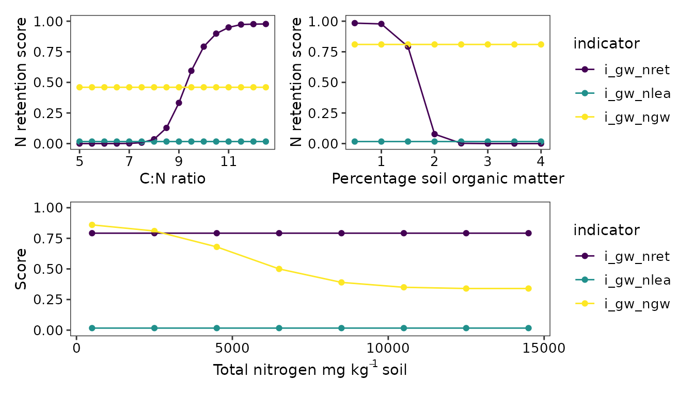
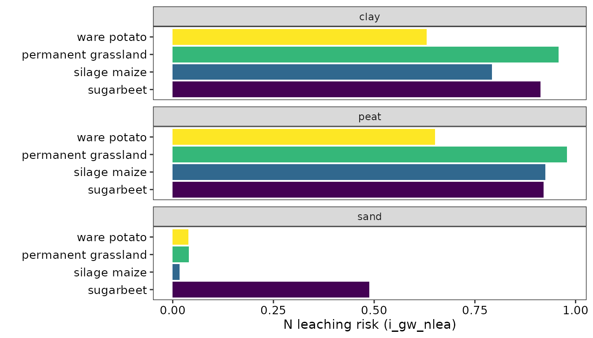

Introduction
Groundwater is used as source of drinking water, irrigation, and to supply natural habitats with water. Groundwater must continuously be recharged by precipitation which infiltrates the soil. Soil plays a pivotal role in ensuring that there is ample clean groundwater. Soils may buffer groundwater recharge, filter out nutrients, and breakdown (organic) contaminants such as pesticides.
It is important to monitor the soil functions that support groundwater ecosystem services. Because agricultural soils cover large areas, and may be subject to operations which hinder soil functions in support of groundwater such as the use of large machines that may compact the soil, and the use of manure, fertilisers,and pesticides.
The BLN evaluates the following soil functions:
- groundwater recharge
- buffering of nitrogen in soil water
- buffering of pesticides
Groundwater recharge
Groundwater recharge is evaluated with the
bln_wat_groundwater_recharge and bln_bbwp_bw
functions. These evaluations are also used separately in the OBIC and
BBWP packages (Verweij et al., 2023; Ros &
Verweij, 2023).
The first function, bln_wat_groundwater_recharge,
evaluates how well water can infiltrate and seep down to the
groundwater. This is affected by the soil’s cultivation (B_LU_BRP), the
risk of soil compaction (B_SC_WENR), groundwater level (B_GWL_CLASS),
presence of drains, soil texture, and the use of green manure. With
these inputs, the function calculates soil permeability and the risks of
sealing and soil compaction, both of which hamper groundwater
recharge.
The second function, bln_bbwp_bw, evaluates how well a
soil can hold onto water such that it has sufficient time to infiltrate.
This also depends on the cultivation, groundwater level and soil texture
but is unaffected by soil compaction risk. Instead, this function
considers whether the soil is located in a drought-prone area and the
HELP code corresponding to the fields location (Van Bakel et al., 2005). These HELP codes
relate to the water needs of types of landuse.
See examples of these BLN functions below.
water_recharge <- bln_wat_groundwater_recharge(
ID = 15,
B_LU_BRP = 259,
B_SC_WENR = 3,
B_GWL_CLASS = 'GtVI',
B_DRAIN = TRUE,
A_CLAY_MI = 20,
A_SAND_MI = 65,
A_SILT_MI = 10,
A_SOM_LOI = 5,
M_GREEN = FALSE
)
water_buffering <- bln_bbwp_bw(
ID = 15,
B_LU_BRP = 259,
B_HELP_WENR = 'Mn25C',
B_GWL_CLASS = 'GtVI',
B_AREA_DROUGHT = TRUE,
A_CLAY_MI = 20,
A_SAND_MI = 65,
A_SILT_MI = 10,
A_SOM_LOI = 5,
penalty = TRUE
)Below we illustrate how these indicators react to changes in soil texture, groundwater level, and crop type.

Nutrient buffering
Nutrient buffering is the capacity of the soil to retain nutrients
such that they remain available to plants and avoid leaching to
groundwater. In the BLN, this is evaluated with the functions
bln_wat_nretention_gw, bln_bbwp_ngw, and
bln_wat_nrisk_gw. The first two assess nitrogen retention
and the third scores the risk of nitrogen leaching.These evaluations are
also used separately in the OBIC and BBWP packages (Verweij et al., 2023; Ros & Verweij,
2023).
Retention of nitrogen by the soil is mainly governed by soil type and soil nutrient contents. Soils more vulnerable to leaching such as sandy ones, have higher risks and score lower if all else stays the same. See the differences for sand, peat, and clay when soil organic matter = 1.7%, total nitrogen = 2500 mg N kg-1, and the C:N ratio is 10.
The soil organic matter content, C:N ratio and total soil nitrogen can also affect the N retention score (i_gw_nret) and risk of N leaching to groundwater (i_gw_ngw and i_gw_nlea).

The risk of leaching nitrogen to groundwater (i_gw_nlea) is primarily determined by the soil type (as seen above) and crop (see below). The function used to calculate this indicator corrects for situations where supply of P and K and the pH are optimal. In such situations, the risk of leaching is reduced as crops are likely to take up more nitrogen under ideal conditions.

Contaminant buffering
BLN has one function to score the risk of groundwater pollution with
pesticides. This function, bln_wat_pesticide estimates the
likelihood that a persistent pesticide penetrates in the soil below 1
metres. Because this function scores a risk, a poor score does not
necessarily mean that groundwater is or will be contaminated as the
function does not take management or actual precipitation into account.
The function uses BLN::bln_calc_psp to determine a
precipitation surplus, this depends on the cultivated crop and whether
green manure was grown. The other driving variable for this indicator is
soil organic matter content. van den Dool et al.
(2021) describe the function in more detail and describe a
demonstration in practice. They based the development of the function on
the formula described by Tiktak et al.
(2006).